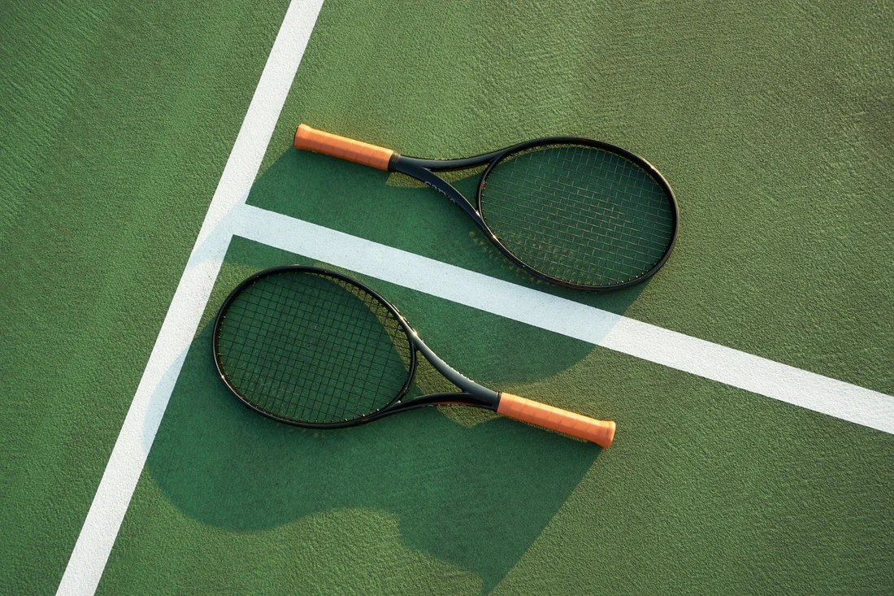

Setup
Tennis is fairly simple to set up compared to other sports. If you wish to play singles, only two players are needed total. If you wish to play doubles, two teams of two players are needed, totaling up at 4 players total. Below is necessary information on how to set up a tennis match.
Equipment
- 1 Tennis Racket For Each Player
- 1 Tennis Ball
- Tennis Shoes
- Net (Usually on the Court)
- Scorecard (Optional)
Time and Location
A typical tennis match takes anywhere between 1 hour and 2 hours. Unlike other sports, tennis is not a timed sport, so be sure to remember that. As for location, all you need is a tennis court. Pickleball courts WILL NOT work. This tennis court can be indoors or outdoors.
Phone: 234-334-4523
Address: Unknown, Utah, United States